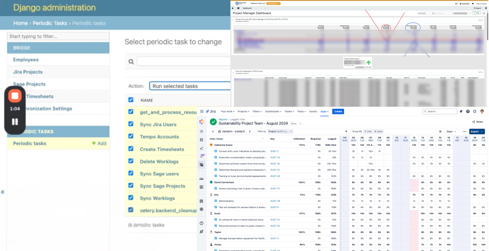
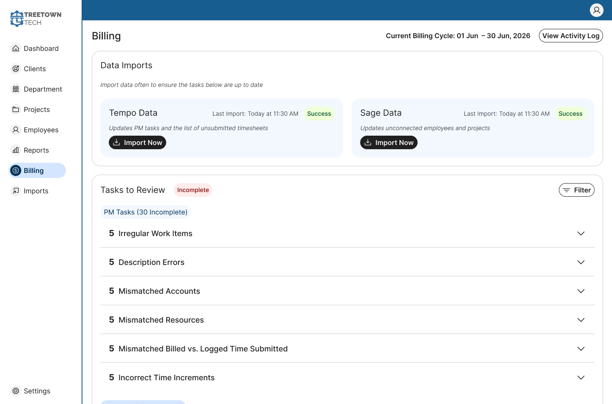
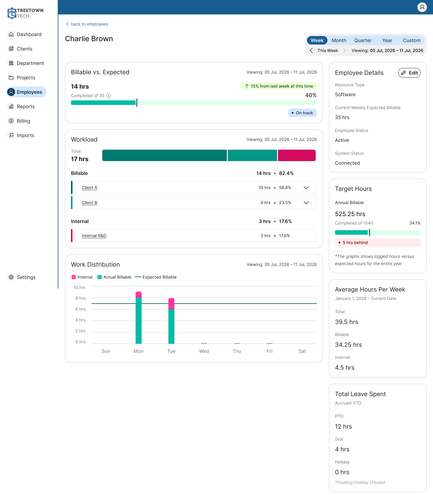
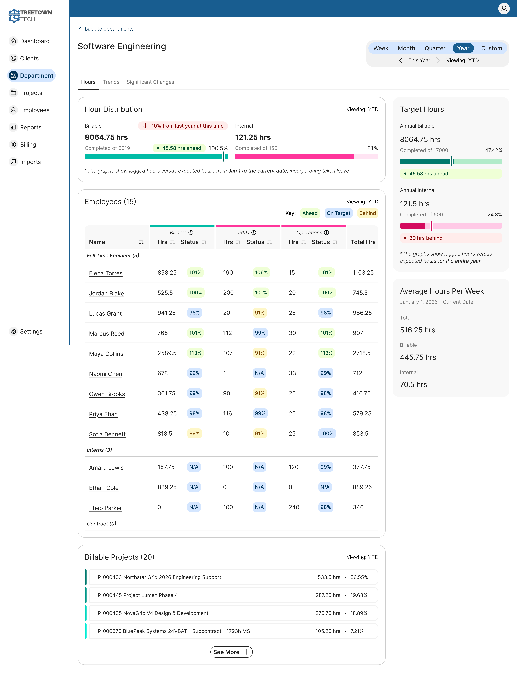
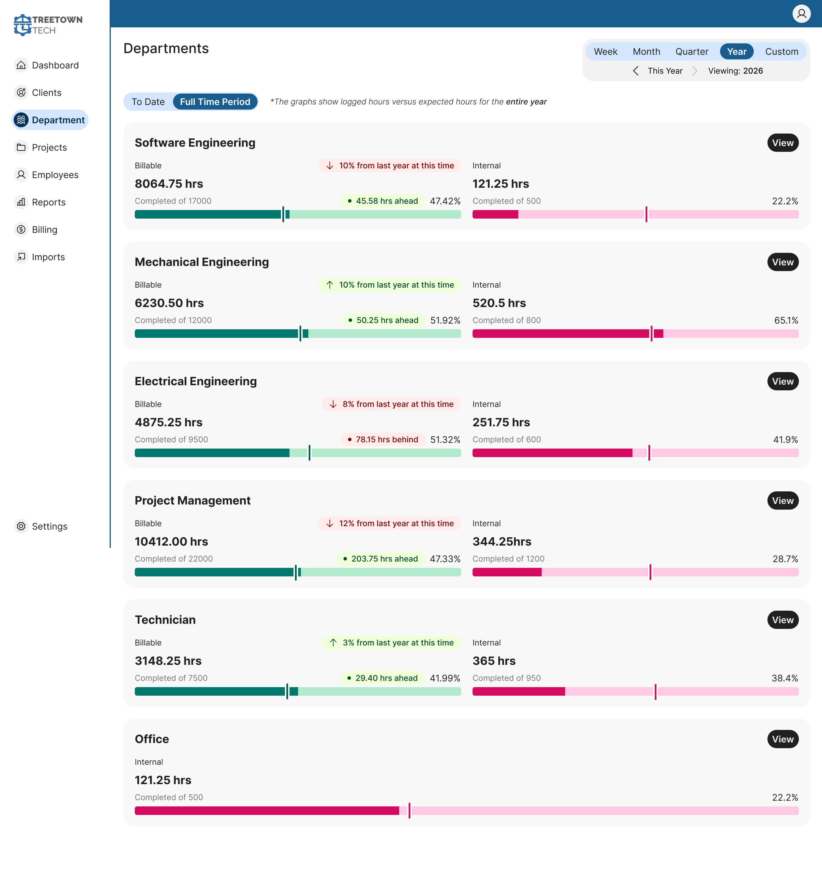
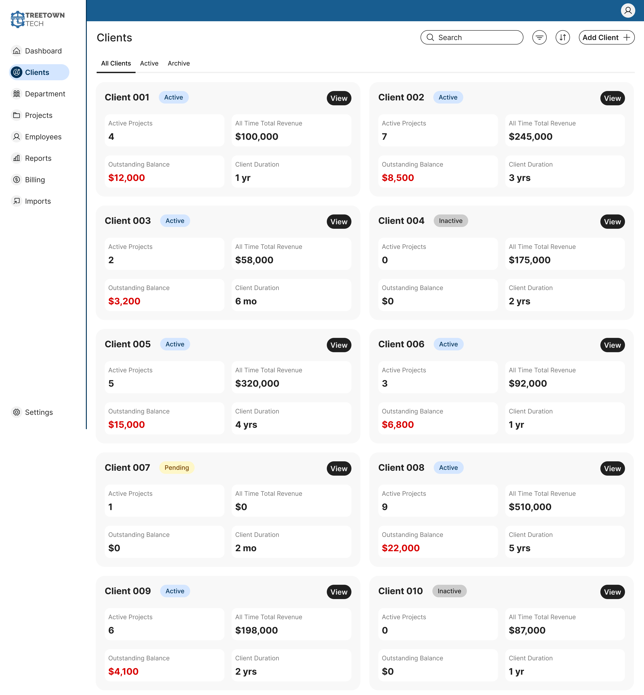

Treetown Tech internship
Zookeeper
One place to see how the company is performing and to get billing right before invoices go out.
Overview
The challenge
There was no single view connecting department metrics to project and individual performance. Closing that gap took hours of manual checking every cycle to make sure no mistakes reached clients on their invoices.

The solution
Zookeeper, a responsive dashboard platform that brings both systems into one interface. It traces performance from the department level down to each person and flags billing discrepancies before invoices go out.

The constraint: Buildable now
Engineering would build directly from my designs, so every screen had to be feasible right away. I could only use data that already existed in the back end. No new data sources and no wish list features.
How I worked
-
Scope
Requirements with each stakeholder group
-
Wireframe and prototype
The key flows for each stakeholder view
-
Test
Flows tested with the people who would use them
-
Hand off
Written specs, so engineering could build from the designs
Underneath every step
A shared Figma library
Every screen was built with auto layout, variants, component properties, and variables, so the team could build and extend screens consistently.
One platform, five questions
Each stakeholder group came to the data with a different question. I designed a view to answer each one.
Employees
“Am I on track?”
Employees and their managers check progress against weekly and annual billable goals, and see right away whether they need to adjust their pace.

Project managers
“How are my projects doing?”
Project managers need project health at a glance: is the project on budget, and how many billable hours are left?
Department directors
“Who is hitting their target?”
Directors wanted to see who on their team was meeting their billable target and, when someone wasn't, where their time was going on internal work.

Billing team
“Are our invoices accurate?”
The billing team validates every Tempo timesheet before invoices go out: correct Jira ticket and epic links, time amounts, billed accounts, and 15 minute increments. HR also has setup tasks that keep employees and projects connected between Tempo and Sage Intacct. I designed both into one guided billing cycle that surfaces discrepancies in seconds.
Company partners
“How is the company doing?”
Partners get a high level view by department, client, and project, so they can see where to adjust and where risk is building.


Results
Every stakeholder group responded well to the designs, and development is underway so Zookeeper can become part of everyday operations.
The first version of the billing cycle tool already cut the billing cycle by 2 hours per project manager.
Next case study
White Pine Library Cooperative